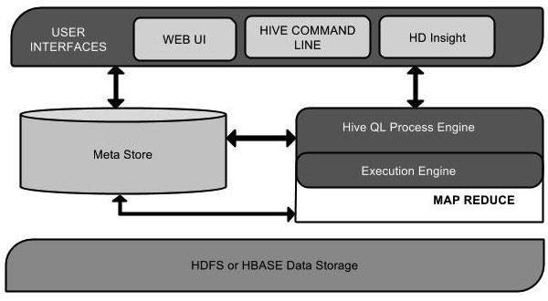

Hive
Hive is not
- A relational database
- A design for OnLine Transaction Processing (OLTP)
- A language for real-time queries and row-level updates
Features of Hive
- It stores schema in a database and processed data into HDFS.
- It is designed for OLAP(OnLine Analytical Processing).
- It provides SQL type language for querying called HiveQL or HQL.
- It is familiar, fast, scalable, and extensible.
Architecture

Data Types
- Column Types
- Internal Types
Type | Postfix | Example --------- | -------- | ------- TINYINT | Y | 10Y SMALLINT | S | 10S INT | - | 10 BIGINT | L | 10L - String Types 单引号或者双引号括起
Data Type | Length -------- | ------ VARCHAR | 1 to 65355 CHAR | 255 - Timestamp 它支持具有可选纳秒精度的传统UNIX时间戳。它支持java.sql.Timestamp格式“YYYY-MM-DD HH：MM：SS.fffffffff”和格式“yyyy-mm-dd hh：mm：ss.ffffffffff”。
- Dates DATE值以年/月/日格式以NaN的形式描述。
- Union Types Union是异构数据类型的集合。您可以使用create union创建实例。语法和示例如下：
UNIONTYPE<int, double, array<string>, struct<a:int,b:string>> {0:1} {1:2.0} {2:["three","four"]} {3:{"a":5,"b":"five"}} {2:["six","seven"]} {3:{"a":8,"b":"eight"}} {0:9} {1:10.0}
- Internal Types
- Literals
- Floating Point Types 浮点类型只是带有小数点的数字。一般来说，这种类型的数据由DOUBLE数据类型组成.
- Decimal Type 十进制类型数据只是浮点值，其范围高于DOUBLE数据类型。小数类型的范围约为-10-308至10308。
- Null Values
- Complex Types
- Arrays Hive中的数组的使用方式与Java中使用的数组相同。
Syntax: ARRAY<data_type> - Maps Hive中的Maps类似于Java中的。
Syntax: MAP<primitive_type, data_type> - Structs Hive中的Struts类似于使用带注释的复杂数据。
Syntax: STRUCT<col_name : data_type [COMMENT col_comment], ...>
- Arrays Hive中的数组的使用方式与Java中使用的数组相同。